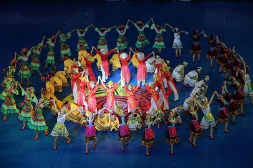

进香舞

进香舞是京族特色舞蹈，在京族重要节日“哈节”中表演。"哈节"的祭祀活动一般长达三至五天，第一天要举行最为隆重的"迎神"仪式，而且歌舞内容也最为丰富。祭祀仪式开始后，首先由主祭者带领人们迎接来自海上、天宫各位神灵、祖先进入神位，紧接着是向诸神敬酒和献礼。这时由四位身着粉红色丝质长衫、黑色长裤，头扎紫罗兰色发带被称作"桃姑"的京族淑女，伴随祭鼓频频起舞。
在第一天仪式的最后，"桃姑"们再次为诸神跳起了《进香舞》。《进香舞》分为敬神的"跳香"和娱神的"跳乐"两部分。三位"桃姑"左手各拈三支燃香、右手表演"轮指手花"和"转手翻花"等优美舞姿，在女声柔美的《进香歌》中，向神灵频频祝福。随着伴唱节拍的变化，舞蹈从庄重、虔诚的"跳香"转入了明朗而欢快的"跳乐"，使人们再次与神灵同享节日的快乐。